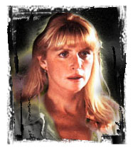

 |
||
Born: April 28, 1948 at The Women's Hospital in New York City. Height: 5' 10"
General Info:
Tall brunette leading and character actress of TV and occasional feature films who first gained attention as Gabe Kaplan's wife on the sitcom "Welcome Back, Kotter". As Julie Kotter, Strassman provided an appealing voice of sanity amid the antics of the show's zany high schoolers and devotedly listened to Kaplan's closing monologues each week. She failed to latch onto another successful TV series after "Kotter" went off the air, but kept busy through the 1980s in guest spots on "Magnum P.I." and "Amazing Stories". Strassman received her largest career exposure when she copped the role of Rick Moranis' responsible, worrisome wife in the surprise hit feature "Honey, I Shrunk the Kids" (1989) and its sequel, "Honey, I Blew Up the Kid" (1992).
A veteran star of stage and screen, Marcia Strassman probably is best
known to television audiences as Julie Kotter from the classic comedy series
Welcome Back Kotter. Film fans will likely recognize her as Diane Szalinski
from the Honey, I Shrunk the Kids feature films - and the ever-popular 3D ride
at the Disney theme parks.
Strassman began her career in musical
theater in New York City. At the age of 14, she replaced Liza Minelli in the
diva's very first show, Best Foot Forward. Strassman went on to appear in
dozens of theatrical productions, including recently starring in Noah Wyle's
production of Hello Again, a musical version of La Ronde. Strassman's extensive
television credits include a recent eight-episode arc on NBC's Providence, the
pilot episode of ER, the Showtime original film Mastergate, The Rockford Files:
Friends and Foul Play and guest appearances on Amazing Stories, Sweet Justice,
Highlander, Magnum, P.I. and M*A*S*H.
Contracts worked include:
Voice Over, Low Budget, Limited
Exhibition, Commercial, Features, Series regular, and Series Guest Star
Notable
Credits include:
Julie Kotter on "Welcome Back Kotter", starred in
"Honey I Shrunk The Kids" and "Honey I Blew Up the Kids", Co Starred in
"Another Stakeout". Recurring on "Providence", "Sweet Justice" (with Melissa
Gilbert) and M*A*S*H. Guest Starred on various series: Tracey Ullman, Touched
By an Angel, Amazing Stories, Magnum P.I., Rockford Files and several MOW's ie:
Brave New World, Mastergate for Showtime.
Union
Activism:
Marcia was one of eight actors on the steering committee for
the Actors Fund Benefit at the Hollywood Bowl during the 1980 strike.
Activism:
Aids Walks, DCC phone bank, Events for
Tuesday's Child (organization for kids with Aids), and the 2002 Benefit for
UCLA Breast Cancer Center.
Personal:
Her education was formed by being on the
stage and working professionally from the age of fourteen. Acting is my
livelihood. Having worked with both Melissa Gilbert and Mike Farrell, and being
lucky enough to have personal relationships with both of them;
Misc:
She was raised and grew up in Passaic, NJ. She
started her career as a teen model in a local children's dept. store. Modeling
in NYC came next and before you know it, she is in a show on off-Broadway, Best
Foot Forward, singing and dancing. The rest is history. She is one of 4
children. Her grandmother was a lead in many Florence Ziegfield shows many
years ago. Marcia has a daughter named Elizabeth.
Music:
In April, 1967, Marcia attempted to launch a singing
career with the recording of Jerry Goldstein and "Lord" Tim Hudson's "The
Flower Children" song (these two coined the phrase "flower power"). The single
was the #1 hit in Los Angeles and San Francisco, but failed to make it to the
top 100 nationwide. Listed as one of twelve "Promising New Actors of 1982" in
John Willis' Screen World, Vol. 34.
[ Back ]